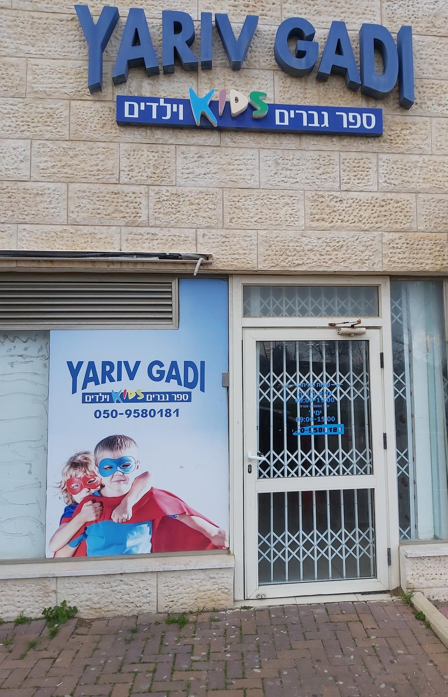
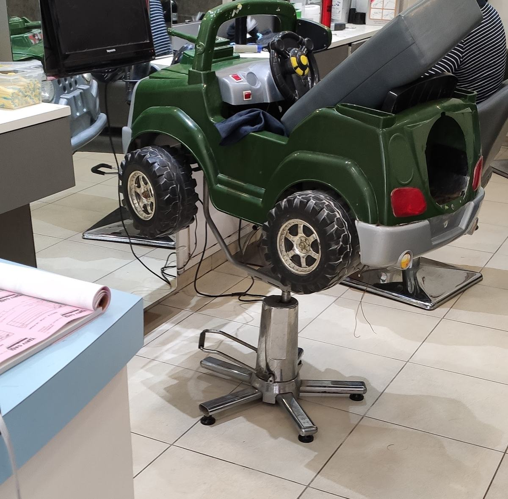
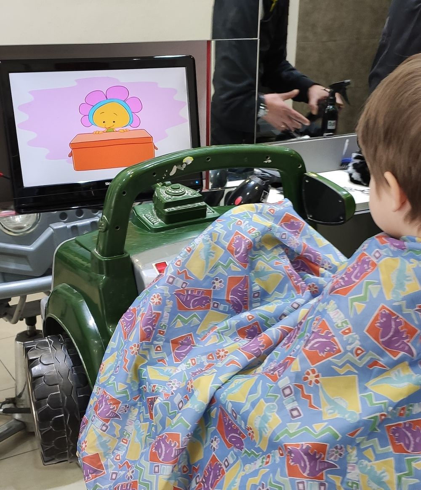
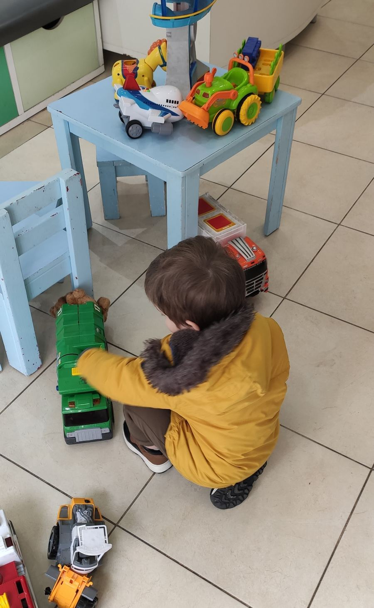
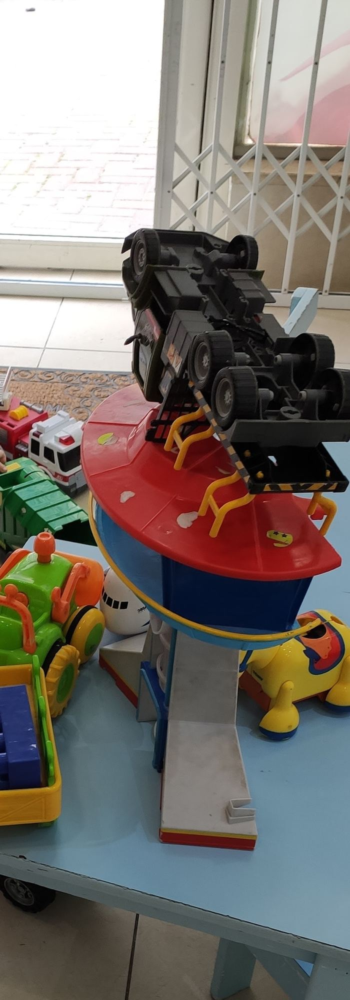
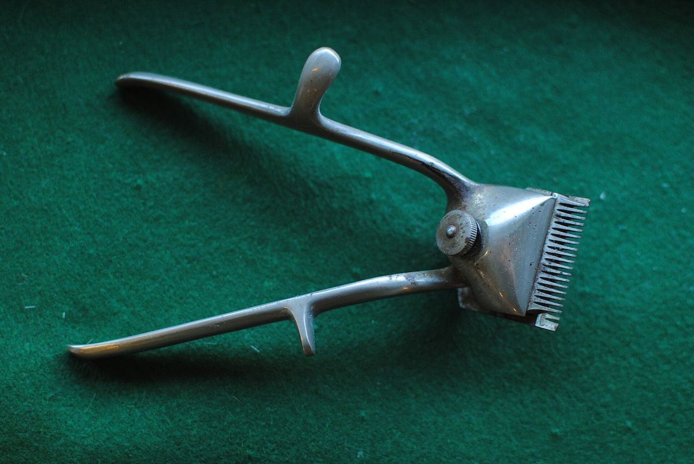
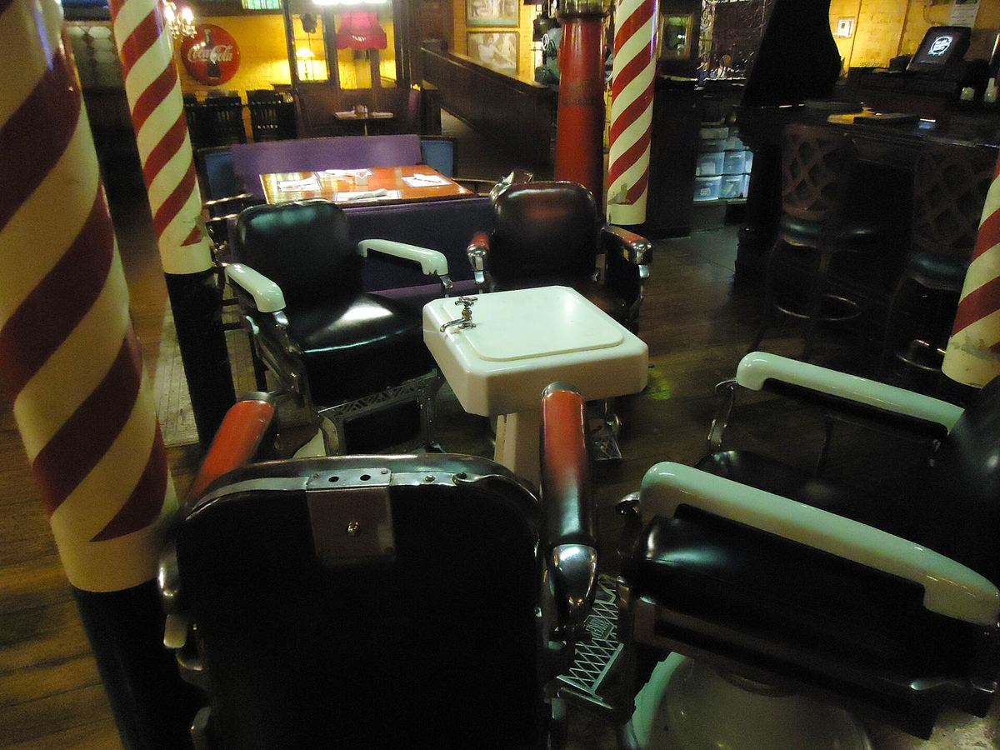

יריב גדיYariv Gadi ספר גבריםBarber for men וילדים& kids
מספרה בהפלמ״ח 25, טירת כרמל. ג׳יפ לקטנים, כיסא ספרים לגדולים.A barbershop at 25 HaPalmach, Tirat Carmel. A jeep for the little ones, a barber’s chair for the grown-ups.
4.8· 158 ביקורות בגוגל· 158 Google reviews

הפלמ״ח 25,25 HaPalmach, טירת כרמל.Tirat Carmel.
השלט הכחול, KIDS בצבעים, והדלת מתחת.The blue sign, KIDS in colour, and the door below it.
ובפנים,And inside, ג׳יפ.a jeep.
כיסא תספורת ירוק עם הגה, גלגלים ומסך מול העיניים.A green barber chair with a steering wheel, wheels and a screen in front.
תמונות מ-Google MapsPhotos from Google Maps
פינה שלמהA whole corner לילדים.for kids.
ג׳יפ, מסך עם סרטים מצוירים, ושולחן צעצועים ליד הדלת.A jeep, a screen with cartoons, and a toy table by the door.



״דאגה לילדים במשחקים ובכסא מיוחד לילדים״
“Caring for the kids with games and a special chair for children”
יוסף עזריאל אשכנזי · ביקורת בגוגלYosef Azriel Ashkenazi · Google review, translated from Hebrew
ביקורות בגוגל, ממוצעGoogle reviews, averaging 4.8
וגםAnd for לגברים.men, too.
ספר גברים וילדים, תחת שלט אחד.A barber for men and kids, under one sign.

סיבוב בכיסאA turn in the chair

להמחשהIllustrativeגררו כדי לסובבDrag to turn
תור אצלA turn with יריב.Yariv.
בוחרים, וההודעה נכתבת לבד.Pick, and the message writes itself.
-
1 מי מסתפר?Who’s having a cut?
-
2 איזה יום?Which day?
-
3 שולחים ליריבSend it to Yariv
לשלוח בוואטסאפSend on WhatsApp
״מספרה לילדים על הרצף סיפרו את הילד באהבה ובעדינות ללא ספק תהיה המספרה שלנו״
“A barbershop for kids on the spectrum. They cut my child’s hair with love and gentleness. Without a doubt it will be our barbershop.”
מיטל משיחMeital Mashiach · translated from Hebrew
״ספר מושלם בטירה והסביבה לילדים ולגברים ונשים תספורת טובה ושווה כל שקל
ממליץ מאוד בחום״“The perfect barber in Tira and around, for kids, men and women. A good haircut, worth every shekel. Warmly recommended.”
Daniel AbergelDaniel Abergel · translated from Hebrew
״מספרה לילדים מקסימה יחס מעולה וחביב״
“A lovely barbershop for kids, excellent and friendly treatment.”
מוטי כהןMoti Cohen · translated from Hebrew
״מקצועי, מדוייק ומהיר! רמה גבוהה״
“Professional, precise and quick! A high standard.”
Hanan HazaniHanan Hazani · translated from Hebrew
״ספר בחסד עליון לב ונשמה ענקיים דאגה לילדים במשחקים ובכסא מיוחד לילדים פשוט מדהים ומיוחד״
“A barber with a real gift, a huge heart and soul, caring for the kids with games and a special chair for children. Simply amazing and special.”
יוסף עזריאל אשכנזיYosef Azriel Ashkenazi · translated from Hebrew
שאלותGood to קצרות.know.
מסתפרים אצלכם גם גברים?Do men get cuts here too?
כן. על השלט כתוב ״ספר גברים וילדים״, ולגברים יש כיסא ספרים רגיל.Yes. The sign says “barber for men and kids”, and men sit in a regular barber’s chair.
מה יש לילדים במספרה?What’s there for kids?
כיסא בצורת ג׳יפ עם הגה ומסך מולו, ופינת צעצועים עם שולחן וכיסאות קטנים.A jeep-shaped chair with a steering wheel and a screen in front, and a toy corner with a small table and chairs.
אפשר לקבוע תור?Can I book a turn?
כן. כותבים ליריב בוואטסאפ או מתקשרים ל-050-958-0181.Yes. Message Yariv on WhatsApp or call 050-958-0181.
מתי פתוח?When are you open?
ראשון, ושלישי עד חמישי 9:00–19:00. שישי 9:00–15:00. שני ושבת סגור.Sunday, and Tuesday to Thursday 9:00–19:00. Friday 9:00–15:00. Closed Monday and Saturday.
נתראהSee you at בהפלמ״ח 25.25 HaPalmach.
טירת כרמל, מתחת לשלט הכחול.Tirat Carmel, under the blue sign.